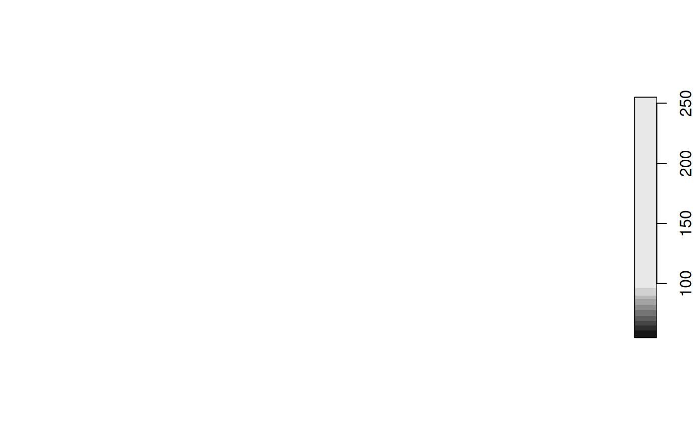
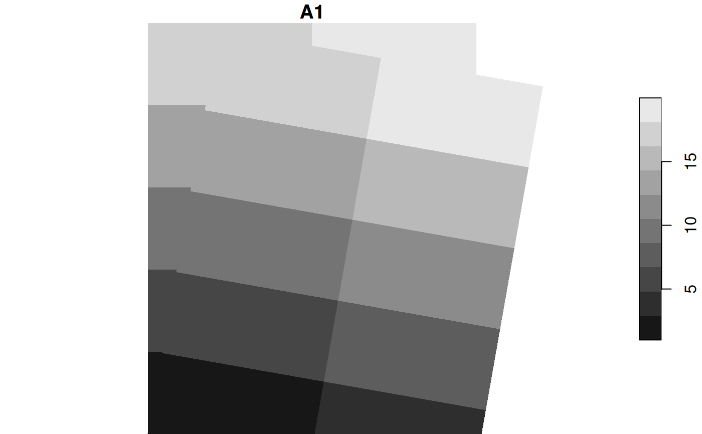
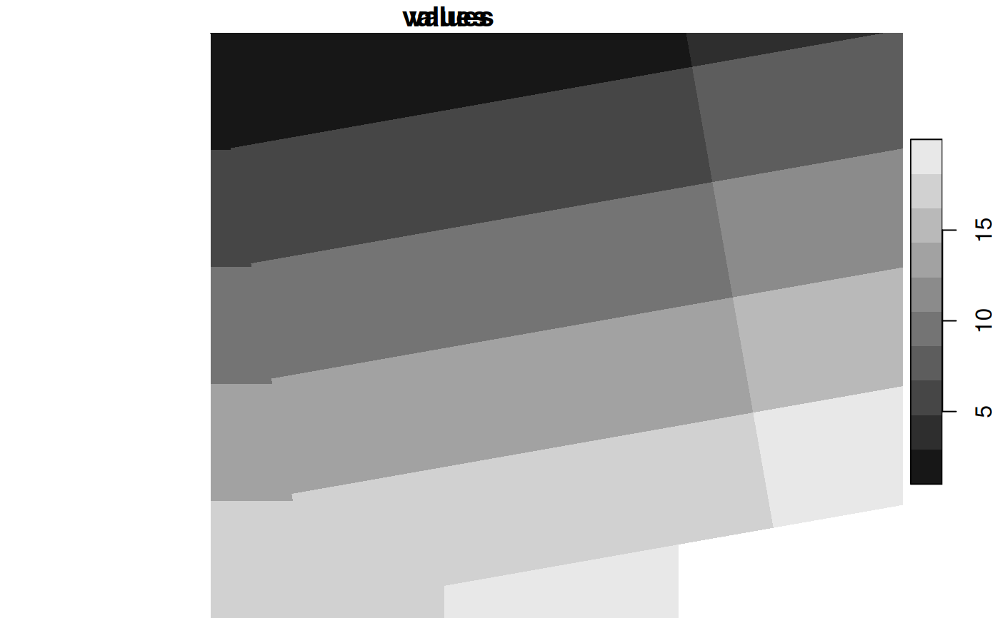
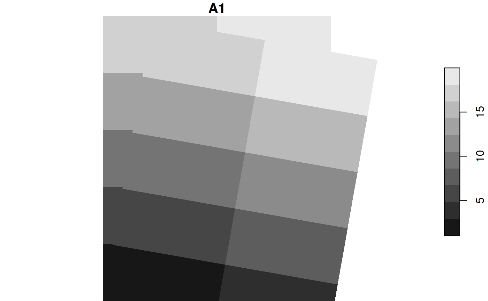
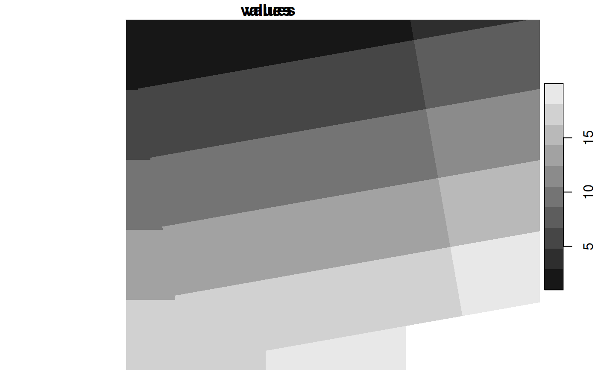

get or set the geotransform, or rotation matrix
Usage
st_geotransform(x, ...)
st_geotransform(x) <- value
# S3 method for class 'stars'
st_geotransform(x) <- valueExamples
# using the "classical" rotation matrix, see https://en.wikipedia.org/wiki/Rotation_matrix :
rot = function(theta, dxdy = c(1., -1.)) {
th = theta / 180 * pi
matrix(c(cos(th), sin(th), -sin(th), cos(th)), 2, 2) %*%
matrix(c(dxdy[2], 0, 0, dxdy[1]), 2, 2)
}
l = st_downsample(st_as_stars(L7_ETMs), 9) # save time in plotting
st_geotransform(l) = rot(20, c(28.5, 28.5)) # clockwise, 20 degrees, scale by cell size
plot(l[,,,1])

 m = rot(20, c(1, 2))
g = expand.grid(x = 0:4, y = 0:4)
plot(g[1:2], asp = 1)
text(g[,1], g[,2], labels = seq_along(g[,1]), pos = 4)
g = t(m %*% t(as.matrix(g)))
points(g, col = 'red')
text(g[,1], g[,2], labels = seq_along(g[,1]), pos = 4, col = 'red')
m = rot(20, c(1, 2))
g = expand.grid(x = 0:4, y = 0:4)
plot(g[1:2], asp = 1)
text(g[,1], g[,2], labels = seq_along(g[,1]), pos = 4)
g = t(m %*% t(as.matrix(g)))
points(g, col = 'red')
text(g[,1], g[,2], labels = seq_along(g[,1]), pos = 4, col = 'red')
 m = matrix(1:20, 4)
s0 = st_as_stars(m)
s = s0
# dy > 0, clockwise rotation:
st_geotransform(s) = rot(10, c(1,1))
plot(s0, reset = FALSE)
plot(s, add = TRUE)

# dy < 0, counter clockwise rotation, + expansion in x-direction:
layout(1)
s0 = st_as_stars(st_bbox(s0), dx = 1)
s0$values = 1:20
s0
#> stars object with 2 dimensions and 1 attribute
#> attribute(s):
#> Min. 1st Qu. Median Mean 3rd Qu. Max.
#> values 1 5.75 10.5 10.5 15.25 20
#> dimension(s):
#> from to offset delta x/y
#> x 1 4 0 1 [x]
#> y 1 5 5 -1 [y]
plot(s0, reset = FALSE)
s = s0
st_geotransform(s) = rot(10, c(2,1))
plot(s, add = TRUE)

m = matrix(1:20, 4)
s0 = st_as_stars(m)
s = s0
# dy > 0, clockwise rotation:
st_geotransform(s) = rot(10, c(1,1))
plot(s0, reset = FALSE)
plot(s, add = TRUE)

# dy < 0, counter clockwise rotation, + expansion in x-direction:
layout(1)
s0 = st_as_stars(st_bbox(s0), dx = 1)
s0$values = 1:20
s0
#> stars object with 2 dimensions and 1 attribute
#> attribute(s):
#> Min. 1st Qu. Median Mean 3rd Qu. Max.
#> values 1 5.75 10.5 10.5 15.25 20
#> dimension(s):
#> from to offset delta x/y
#> x 1 4 0 1 [x]
#> y 1 5 5 -1 [y]
plot(s0, reset = FALSE)
s = s0
st_geotransform(s) = rot(10, c(2,1))
plot(s, add = TRUE)
